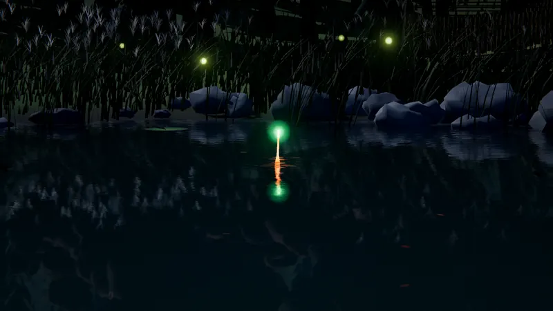
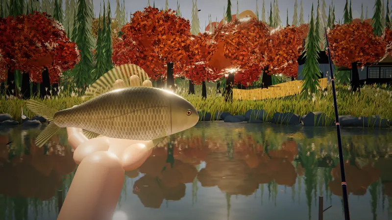
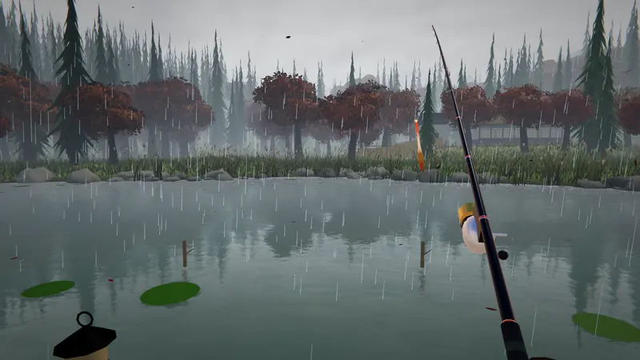

01はじまり
竿を出して、ぼんやり待つ。 それだけで、いい一日。
山あいの小さな沼。ウキがゆれて、雲が水にうつって、遠くでカエルが鳴く。急がせるものは、なにもありません。
『ひだまり沼』は、ブラウザで遊べる、のんびり田舎釣りゲーム。朝から夜まで、春夏秋冬、ただ沼のほとりで過ごすための小さなゲームです。
-

待つウキのわずかな動きと音で、魚の気配を読む。魚ごとに、アタリの癖がちがいます。
-

釣る釣れた魚は、実物の大きさのまま手のひらへ。ものさしで測って、図鑑に残します。
-

ただ居る釣れなくても、いい。雨の音、虫の声、夕焼けを、ぼんやり眺める時間も遊びのうちです。